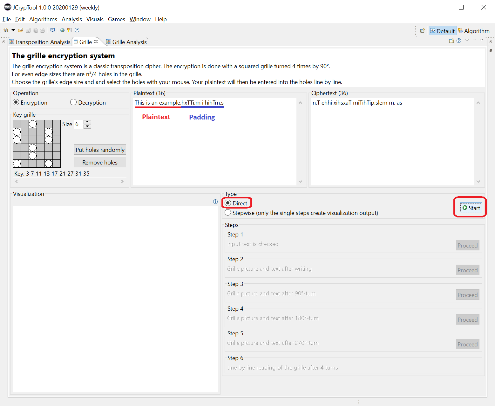
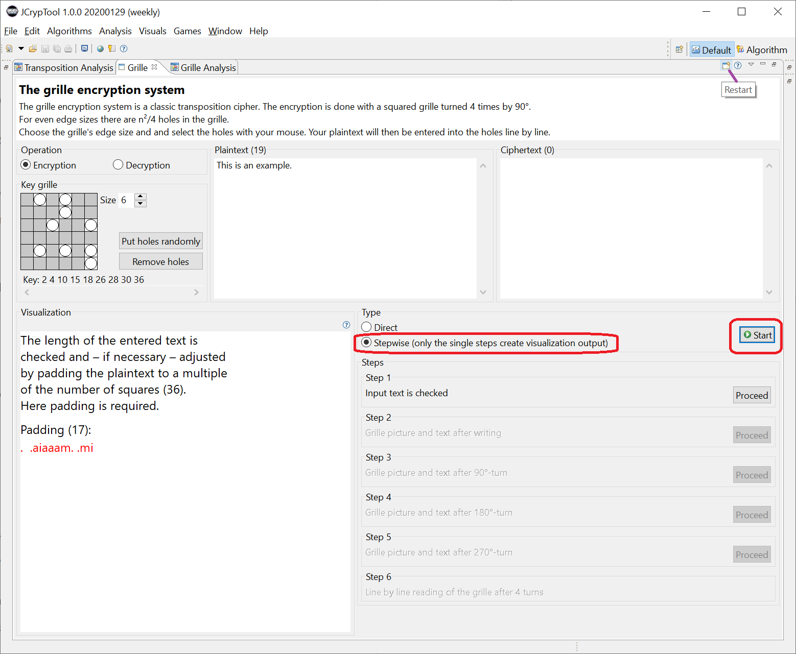
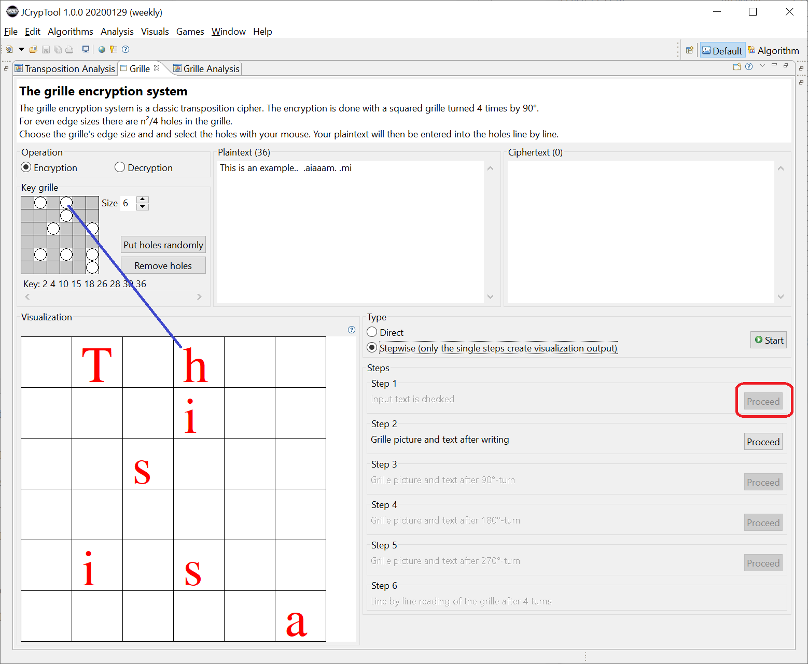
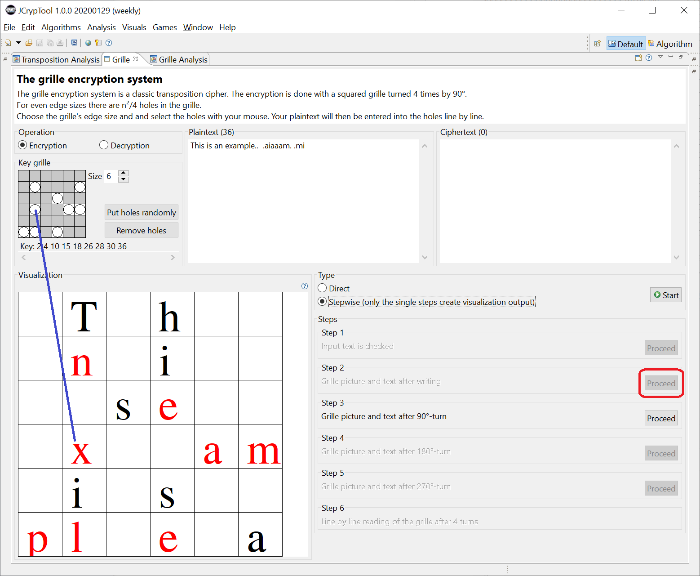
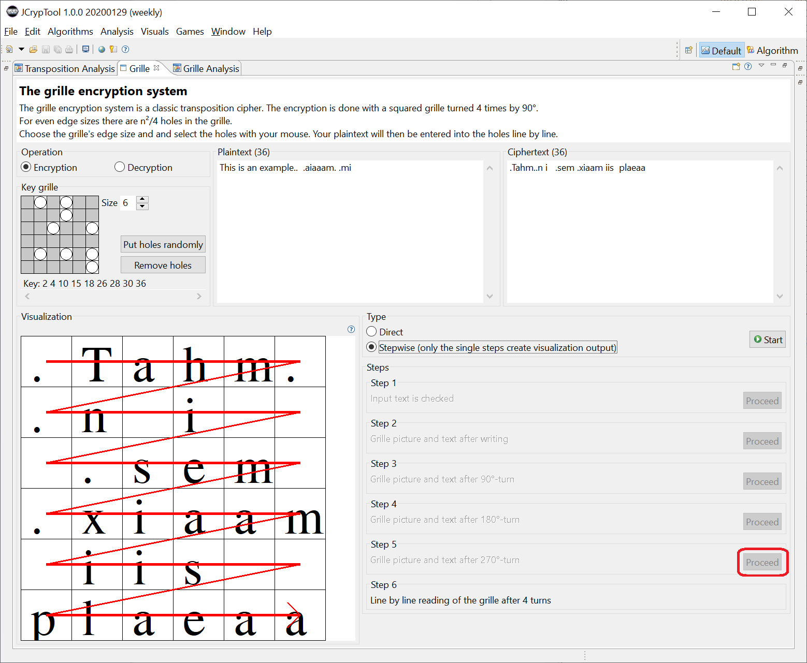
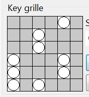
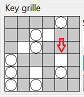
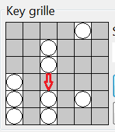

The turning grille is a historical cipher, invented by Eduard Fleißner von Wostrowitz in 1881. It was used in 1916 by the Germans in WW1.
This plugin intends to help people understand the technique of this special form of transposition cipher by visualizing the grille and offering an easy tool to encrypt and decrypt own messages.
The cipher is presented as an educational example of historical cryptography. Do not use the tool to encrypt your correspondence as it is not a strong cipher.
Remark: This plugin visualizes the encryption and decryption using the grille square (and only for square sizes of 4, 6, 8, and 10, what is good enough for the pedagogic visualization of the process). In addition, JCT contains a newer plugin Grill-Cipher Analysis, which offers not only encryption and decryption, but also breaking grille ciphertexts automatically (and this for even and odd square sizes).
The turning grille is a square piece of paper with n² fields, n∈ℕ, n > 0. Each fourth field is cut out. The text to be encrypted is written – through the holes in this mask – line by line to a sheet below. When all holes are filled, the template is rotated 90° clockwise and the inscription of the text is continued; this is repeated 2 more times. At the end, each square of the underlying paper should be filled with exactly one character. For this to work, the holes must be distributed on the grille in a certain way.
You get the resulting ciphertext by reading line by line. All letters in it are scrambled (some call it permuted or transposed).
For decryption, the received ciphertext is copied to an according form (square grid of the predefined page length). Then, an identical grille is simply placed on top of the message, and you get the plaintext by reading line by line (turning the grid 3 times).
If the grille size (edge length) is an even number there are (n²)/4 holes. If the grille size is an odd number, there is a distinct field in the middle that is uncovered on any rotation. This results in (n²-1)/4 holes.
The turning grille was invented by Eduard Fleißner of Wostrowitz, an Austrian colonel. He wrote the book "Handbuch der Kryptografie", which was published in Vienna in 1881 [BAU95, 80]. The cipher was used briefly by Germany in the end of 1916 during the First World War. The grilles had names like ANNA for the 25 capital letters, BERTA for a grille with 36 fields and so on. When the French recognized the procedure in 1917 and deciphering proved to be very simple, the system was discarded after four months of use [KAN97, 309].
Variants containing fewer than the maximum possible holes in the grille were also used but rarely.
Unlike many other methods, the key is not arbitrarily selectable, but is subject to certain rules. If you divide the grille into 4 quadrants, a number can only be cut out in one of the quadrants.
For the standard case with an even side length there are S = 4^(n²/4) possible keys. The possible transpositions do not depend on the text length but only on the key size. With a side length of n=6, these are 262,144 possible keys. A key describes the distribution of the holes. For n=6 a possible key value is: 3 7 11 13 17 21 27 31 35.
If you leave the standard setting for size (6), create a grille by clicking the button "Put holes randomly", and enter the plaintext, you get the ciphertext by just clicking on the "Start" button.
You will see the encrypted result in the ciphertext field. In the plaintext field, you see that the actual plaintext was padded so that it has a length equal to the number of fields in the square (n²).

In the following example, we kept the default size (6) of the grid and the pressed the button "Put holes randomly". The key is shown below the grid as a sequence of number describing the position of the holes in the grid.
Again, the plaintext "This is an example." was used. Before pressing the "Start" button, the visualization type (procedure) was changed to "Stepwise".
(1) After clicking on "Start", the padding and its length (17) are displayed on the left in the grouping "Visualization". Together with the plaintext of length 19, this results in 36 bytes.

(2) After clicking on "Proceed" in step 1, the first 9 characters are distributed on the left in the grouping "Visualization" – you can directly recognize only 7 red letters, because the 2 distributed blanks are not visible.

The blue line shows the hole in the grille and the corresponding letter on the paper lying below.
(3) After clicking on "Proceed" in step 2, the next 9 characters are distributed on the left in the grouping "Visualization" (again in red).

The key grille shown at the top is rotated adequately.
(4) At the end (after 3 more clicks on "Proceed") you can see the finished ciphertext, which is read out line by line from the paper under the grille.

1) If you click on "Start" again, it will start all over again.
2) Instead of making the program to randomly generate a grille with holes, you can also set and change the holes by clicking with the mouse.
a) If you made a grille empty by clicking "Remove holes", you can click on the free white fields. There, the hole is cut, and the according 3 fields in the other 3 quadrants are made grey, to show they are blocked for punching a hole.
b) If you want to change an already existing grille, just click on a "hole" and it will be closed again.
As long as not all holes are cut, the Start button is inactive. So we can't use grille which don't have the maximum possible number of holes.



[BAU95]Bauer, Friedrich L., Entzifferte Geheimnisse, Methoden und Maximen der Kryptologie, 2nd edition, Springer, Berlin 1995 See also the according book in English language: Bauer, Friedrich L., Decrypted Secrets: Methods and Maxims of Cryptology, 2nd edition, Springer, 2007
[KAN97]Kahn, David, The Codebreakers, The Story Of Secret Writing, Scribner, New York 1997
[SCHN03]Schneider, Matthias, Die Fleißner-Schablone, Seminar paper in the field of IT security & cryptology, Siegen 2003
[Wikipedia] Grille (cryptography), https://en.wikipedia.org/wiki/Grille_(cryptography)